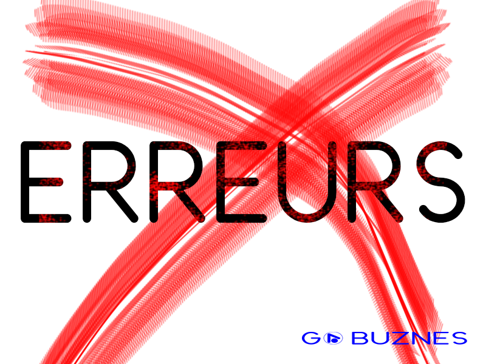
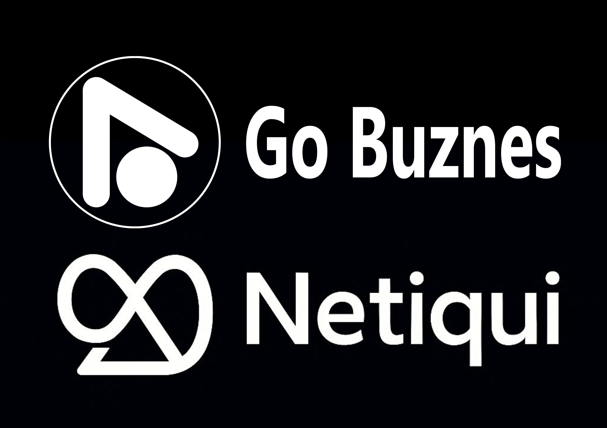

En 2026, en République démocratique du Congo, une réalité s'impose: les commerçants qui réussissent ne sont plus seulement ceux qui vendent bien, mais ceux qui sont visibles là où les clients se trouvent.
Or, vos clients sont aujourd'hui sur leur téléphone. Que vous vendiez des pagnes à Goma, des légumes frais à Masisi, des services de coiffure à Bukavu ou de l'artisanat à Butembo, votre prochain client est à un clic de vous.
La bonne nouvelle ? Vous n'avez plus bésoin de tout maîtriser seul. Go Buznes, la marketplace de référence dans l'Est de la RDC, opérée par Netiqui, vous ouvre les portes du e-commerce.
Et Netiqui ne se contente pas de vous héberger : c'est un partenaire complet qui vous accompagne du logo jusqu'au marketing, de la boutique jusqu'à l'application mobile.
Dans ce guide, nous vous montrons non seulement comment ouvrir votre vitrine sur Go Buznes en 2026 mais aussi tous les services exclusifs que Netiqui met à votre disposition pour transformer votre petit commerce en entreprise digitale prospère.
2026, l'année où votre commerce change de dimension
Ne laissez pas cette opportunité. Chaque jour, des commerçants congolais comme vous doublent leur chiffre d'affaires grâce au digital. Ils ne sont ni plus intelligentsni plus riches. Ils ont simplement osé franchir le pas au bon moment.
Aujourd'hui, avec le digital, des vendeurs de Goma reçoivent des commandes depuis Bukavu, Beni, Uvira et même au-delà.
Des coiffeuses de Butembo remplissent leur agenda grâce à des clients partagés sur WhatsApp. Des producteurs de Masisi livrent leurs récoltes fraîches à des restaurants de la ville. Pourquoi pas vous ?
Ouvrir votre boutique en ligne c'est :
- Multiplier vos points de contact avec les acheteurs.
- Vendre 24h/24, même quand votre boutique physique est fermée.
- Construire une image de marque sérieuse et moderne.
- Réduire vos pertes en écoulant vos stocks
Netiqui, bien plus qu'un simple hébergeur de boutique
Voici ce qu'il faut comprendre : lorsque vous créez votre boutique sur Go Buznes, vous ne rejoignez pas une simple plateforme. Vous rejoignez un écosystème complet de services digitaux, porté par Netiqui, une entreprise congolaise qui maîtrise son métier.
Netiqui, c'est:
- Go Buznes, la marketplace où votre boutique prend vie
- Un service de design professionnel : logos, visuels, identités de marque.
- Une agence de marketing digital : campagnes, communication, visibilité.
- Un studio de création d'application et de templates pour mobiles.
- Un accompagnement humain : des équipes qui comprennent vos réalités locales
Ce qu'il faut préparer avant de soumettre votre demande
Un dossier bien préparé est un dossier traité rapidement. Avant de commencer, réunissez :
- Le Nom exact de votre boutique, réféchi et disponible
- L'adresse de votre local commercial à Goma : Quartier, Avenue, Commune et Numéro. Il s'agit bien de l'adresse de votre boutique, pas de votre résidence personnelle.
- Un numéro WhatsApp professionnel, distinct de votre numéro privé.
- Votre logo _ ou la simple volonté d'en faire créer un par notre équipe de designers
- Une connexion internet, même modeste : l'application Go Buznes est optimisée pour fonctionner sur les réseaux 2G et 3G
La procédure officielle, étape par étape
étape 1 - Accédez à Go Buznes
Deux possibilités s'offrent à vous :
- Via l'application mobile : Ouvrez l'application Go Buznes depuis votre téléphone.
- Via le navigateur web : rendez-vous à l'adresse officielle : https://gogamenetiqui.gihub.io/Go-Buznes/
étape 2 - Localiser l'onglet "Plus (vendre)"
Sur l'écran principal, repérez le menu de navigation. L'onglet "Plus (vendre)" se trouve au milieu de l'écran, reconnaissable à son icône en forme de signe + ou de boutique. C'est votre porte d'entrée vers le monde des vendeurs.
Cliquez dessus.
étape 3 - Sélectionner "Créer ma Boutique"
Une nouvelle page s'affiche. Cherchez la mention "Créer ma Boutique" et cliquez dessus. Vous entrez officiellement dans le parcours de création de votre vitrine.
étape 4 - Remplir le formulaire "Demande d'ouverture de vitrine"
Un formulaire intitulé "Demande d'ouverture de vitrine" apparait. C'est le documenent officiel que vous transmettez à l'équipe Go Buznes. chaque champ compte.
Nom du Commerce = Nom de service = Nom de la boutique
Inscrivez ici le nom de votre boutique. Par exemple : "Ets Francky", "Business And Innovation Center", "Salon élégance Goma", "Mosaïque Service". Le nom doit être unique, mémorable et cohérent avec votre activité. évitez les noms trop longs ou difficiles à prononcer. Un bon nom, c'est votre prémière publicité.
L'adresse de votre boutique (et non votre adresse personnelle)
Remplissez avec précision :
- Quartier (ex: Katindo, Les Volcans, Ndosho)
- Avenue (ex: Cinq Chantier, du lac, Ngungu)
- Numéro de la parcelle ou du local
Le numéro WhatsApp de votre boutique
Indiquez un numéro WhatsApp dédié à votre activité commerciale. Pas votre numéro personnel. Ce numéro doit être actif et joignable pendant vos heures d'ouverture. C'est par ce canal que vos clients passeront commande.
N'oubliez pas votre Logo
Le logo fait partie intégrante du dossier. Il doit être envoyé avec vos informations. Un logo soigné renforce la crédibilité et rendra votre boutique innuoubliable. Si vous n'en avez pas, notre service de design s'en charge pour vous - voir section dédiée plus bas.
étape 5 - Envoyer votre demande via WhatsApp à Netiqui
Une fois le formulaire complété et le logo prêt, cliquez sur "Envoyer ma demande".
Votre dossier est transmis automatiquement via WhatsApp en message direct à Netiqui, l'entreprise mère de Go Buznes. C'est le canal officiel de traitement. Vous recevrez une confirmation de réception immédiate.
étape 6 - La vérification par le modérateur Go Buznes
Un modérateur de Go Buznes examine ensuite votre dossier :
- Le nom de la boutique est-il conforme ?
- L'adresse du local à Goma est-elle valide ?
- Le numéro WhatsApp est-il professionnel et joignable ?
- Le logo est-il bien joint et de qualité suffisante ?
étape 7 - Réception du lien officiel de votre boutique
Félicitations ! Une fois validée, Go Buznes vous transmet le lien officiel de votre boutique. C'est l'adresse unique de votre commerce en ligne.
Vous pouvez immédiatement :
- Le publier sur vos statuts WhatsApp.
- Le partager dans vos groupes Facebook et sur votre page professionnelle.
- L'envoyer par SMS à vos clients fidèles.
- L'imprimer sur vos cartes de visite, flyers ou enseignes
Votre Logo professionnel, offert par NETIQUI
Ne laissez pas l'absence de logo freiner votre lancement. Chez Netiqui, nous savons que tous les bons commerçants ne sont pas graphistes. C'est pourquoi nous avons créé un service de design dédié aux vendeurs de Go Buznes
Un design pensé pour votre business local
Nos designers conçoivent pour vous un logo sur mesure, adapté à votre secteur : alimentation, habillement, beauté, services, restauration, etc. Un logo qui parle à votre clientèle congolaise, qui inspire confiance et qui distingue de la concurrence. Vous fournissez le nom de votre boutique et quelques indications sur votre activité. Nous nous occupons du reste.
Des formats multiples, y compris le SVG
Votre logo doit être utilisable par tout : sur votre vitrine en ligne, vos réseaux sociaux, vos emballages, vos factures, votre enseigne physique. C'est pourquoi nous livrons votre logo en plusieurs formats :
- PNG (fond transparent, parfait pour le web et les résaux sociaux)
- JPG (pour les documents simples)
- PDF (pour l'impression professionnelle)
- SVG (format vectoriel, redimensionnable à l'infini sans perte de qualité - idéal pour les enseignes, banderoles et impressions grand format)
Comment bénéficier de ce service ?
Lors de votre demande d'ouverture de vitrine, indiquez simplement que vous souhatez bénéficier du service de design logo Netiqui. Le modérateur vous met en relation avec notre équipe créative. Vous recevez une proposition dans le meilleurs délais, avant la validation finale de votre boutique.
Tout ce dont votre commerce a besoin, Netiqui le fait pour vous
C'est ici que Netiqui se distingue. Nous ne sommes pas seulement une marketplace. Nous sommes un partenaire digital complet pour les entrepreneurs congolais. Voici tout ce que nous pouvons faire pour vous.
Le marketing digital qui fait décoller vos ventes
Une belle boutique ne suffit pas : il faut que les clients la découvrent. Chez Netiqui, nous concevons pour vous des stratégies de marketing digital adaptées à votre activité et à votre budget :
- Création et gestion de vos pages professionnelles.
- Rédaction de contenus attractifs pour vos réseaux sociaux.
- Campagnes de communication ciblées sur WhatsApp, Facebook et Instagram
- Conseils en référencement local pour apparaître dans les recherches.
Le design graphique sous toutes ses formes
Au-delà du logo, notre équipe de designers crée pour vous :
- Des visuels pour vos réseaux sociaux (affiches, bannières, flyers).
- Des cartes de visite et supports imprimés professionnels.
- Des maquettes pour vos embellages ou étiquettes de produits.
- Des identités visuelles complètes (logo, couleurs, typographies).
La conception et la création d'applications mobiles
Vous avez un projet plus ambitieux ? Vous rêvez d'une application mobile pour votre commerce, votre école, votre ONG ou votre service ? Netiqui conçoit et développe des applications mobiles sur mesure, pensées pour les réalités congolaises : légères, fonctionnelles, accessibles même avec une connexion limitée.
De l'idée à la mise en ligne, nous vous accompagnons à chaque étape.
Des templates d'applications prêt à l'emploi
Vous n'avez pas le budget pour une application entièrement personnalisée ? Pas de problème. Netiqui propose des templates d'applications prêts à l'emploi, que nous adaptons à votre image et à vos besoins. C'est la solution rapide et économique pour entrer dans l'ère du digital sans vous ruiner.
Un seul partenaire pour tout votre écosystème digital : Netiqui.
C'est notre promesse. C'est notre force.
Les erreurs à éviter lors de votre demande

Pour maximiser vos chances de validation rapide, évitez ces pièges fréquents :
- Indiquez une adresse personnelle au lieu de l'adresse de votre boutique.
- Fournir un numéro WhatsApp privé au lieu d'un numéro professionnel.
- Choisir un nom de boutique déjà pris ou trop générique.
- Envoyer un logo de mauvaise qualité - ou pire, aucun logo.
- Remplir le formulaire de manière incomplète ou approximative.
Votre réussite commence aujourd'hui avec Netiqui
Crée sa boutique sur Go Buznes en 2026, c'est bien plus qu'une simple démarche technique. C'est un acte de croissance, un pas décisif vers la prospérité. Et avec Netiqui à vos côtés, vous n'avancez jamais seul. Logo professionnel, marketing digital, design graphique, applications mobiles, templates : tout ce dont votre commerce a besoin pour réussir en ligne se trouve sous le même toit. Vous n'avez plus à chercher ailleurs, à multiplier les prestataires, à perdre du temps et de l'argent.

Alors, qu'attendez-vous ?
Ouvrez votre application ou rendez-vous sur Go Buznes, cliquez sur l'onglet Plus (Vendre), choisissez "Créer ma Boutique", remplissez le formulaire avec soin et envoyez votre demande dès aujourd'hui.
Votre clientèle à Goma, Butembo, Beni, Uvira, Masisi et partout dans l'Est de la RDC n'attend que vous.
Netiqui transforme votre commerce en succès digital Rejoignez-nous